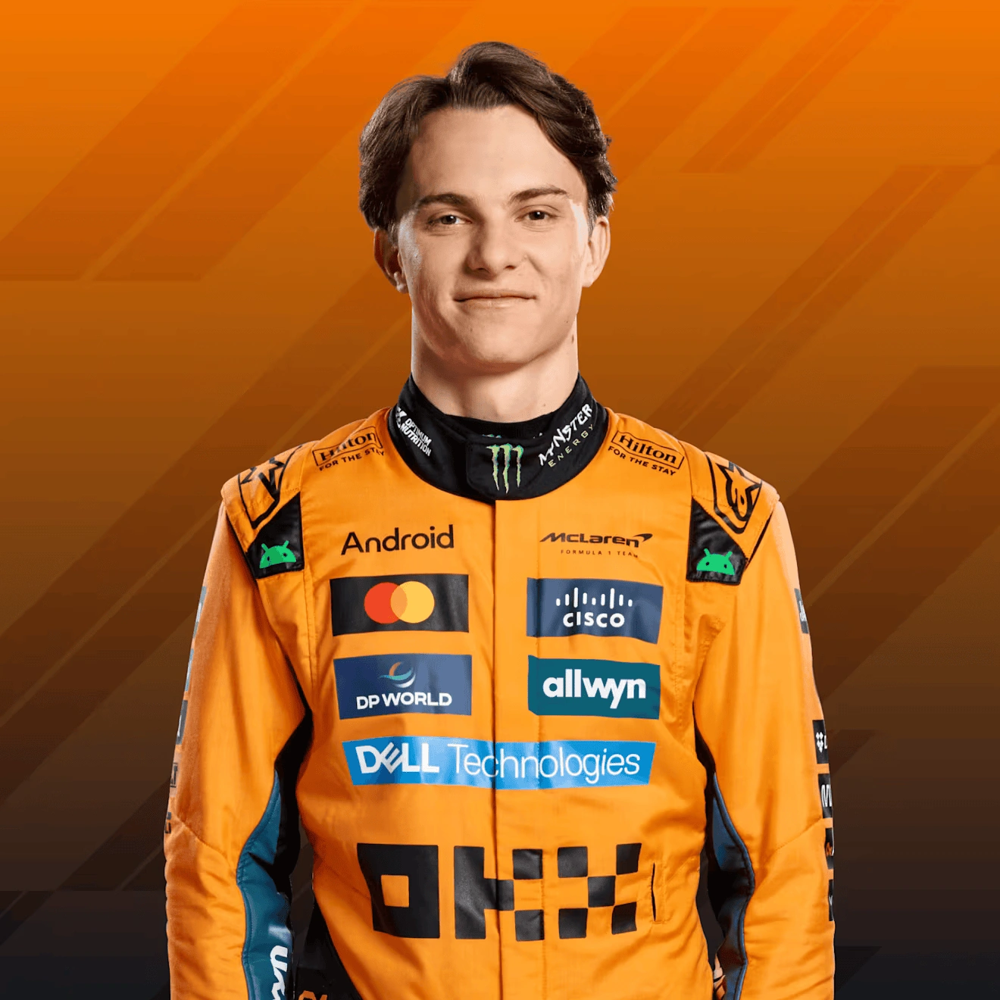

The 2025 Formula 1 season has delivered thrilling races, close battles, and intense rivalries. Every Grand Prix reshuffles the leaderboard and narrows — or widens — the gaps in the title fight. Here’s where things stand in the drivers’ race for glory:


Oscar Piastri
Lando Norris
Max Verstappen
The 2025 Formula 1 season has so far unfolded as a story of resurgence, fierce intra-team rivalry, and shifting momentum. McLaren, after years of rebuilding, have firmly reasserted themselves as the benchmark, clinching the Constructors’ Championship in Singapore with six rounds to spare. Their two drivers, Oscar Piastri and Lando Norris, have traded race wins and lead changes in the standings, making their internal battle nearly as compelling as the wider championship fight. Meanwhile, Max Verstappen has made a late push to close the gap, keeping the title contest alive even as McLaren dominate the team standings.
| Position | Driver | Team | Points |
|---|---|---|---|
| 1 | Oscar Piastri | Mclaren | 336 |
| 2 | Lando Norris | Mclaren | 314 |
| 3 | Max Verstappen | RedBull | 273 |
Beyond the title fight, the season has delivered a host of surprises and standout moments. George Russell’s win in Singapore halted McLaren’s clean sweep in that race, and served as a reminder that never say never in F1. The midfield has also come alive: teams like Sauber, powered by Nico Hülkenberg, have grabbed points and podiums when least expected. Polarizing on-track incidents, tight qualifying gaps, and evolving strategies underline just how unpredictable this season has become.